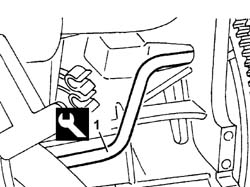
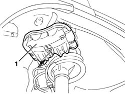
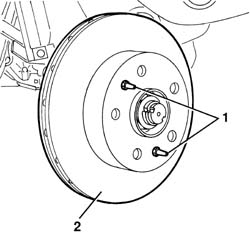
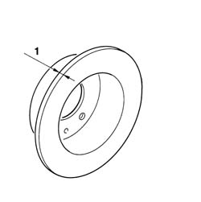
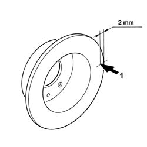

3310A50 FRONT BRAKE DISCS R R
- Path
- Procedures > 33 BRAKING SYSTEM > 3310 DISC BRAKES > 3310A FRONT DISC BRAKES > 3310A50 FRONT BRAKE DISCS R R
- Kind
- repair procedure (removal / refitting; the operation number is the code)
- Applies to
- all engines; all production periods
- Interactive page
- https://sloeber94.github.io/elrnDB-fDct/en/#/244001081
Applies to: all engines; all production periods
 Removing
Removing
 Refitting
Refitting- Position the vehicle on the lift.
- Remove the front wheel.
1. Disconnect the bands (1a) for the brake pipes from the supports (1b).
2. Undo the two bolts fixing the caliper to the steering knuckle.
3. Release the brake caliper from the disc.

Applies to: all engines; all production periods
1. Position the brake caliper unit in the wheel housing and secure it without detaching the brake pipes.

Applies to: all engines; all production periods
1. Undo the bolts.
2. Remove the brake disc.

Applies to: all engines; all production periods
1. The minimum permitted thickness for the brake disc after wear is given below; if the figure is below this, the disc should be replaced.
- If there is deterioration or deep grooves, the surfaces of the brake disc can be skimmed using a grinding machine. when the operation is completed the thickness of the brake disc should not be less than the one given below.
 | Subject | Value |
|---|---|---|
. | Front brake discs | mm |
- | Minimum thickness after grinding | 22.9 |
| Subject | Value |
|---|---|---|
. | Front brake discs | mm |
- | Minimum permitted thickness after wear | 21.9 |
| Subject | Value |
|---|---|---|
. | Front brake discs | mm |
- | Nominal thickness | 24.2 ÷ 23.9 |
- Disc with outer diameter of 280 mm or 300 mm and thickness of 24 mm.

Applies to: all engines; all production periods
Refitting
Removing- Clean the hub flange where the disc is fitted.
1. Place the brake disc in position.
2. Tighten the fixing bolts to the recommended torque.
 | Value - daNm | Fastening | Component | Ø |
|---|---|---|---|---|
. | 1.1 - 2.0 | Bolt | FRONT BRAKE DISCS | M8 |
Applies to: all engines; all production periods
- Check the brake disc non alignment in relation to the rotation axis, this figure should be measured about 2 mm from the outer edge of the disc.
| Subject | Value |
|---|---|---|
. | Front brake discs | mm |
- | Brake disc non alignment | < 0.15 |

Applies to: all engines; all production periods
- Place the caliper assembly and brake pads in position.
- Tighten the new bolts fixing the brake caliper unit.
- Connect the brake pipe bands to the supports.
- Refit the wheel.
- Remove the vehicle from the lift.
- Check that the brakes are working.